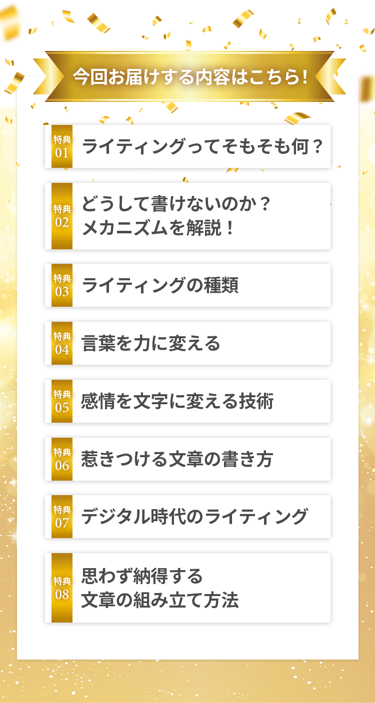
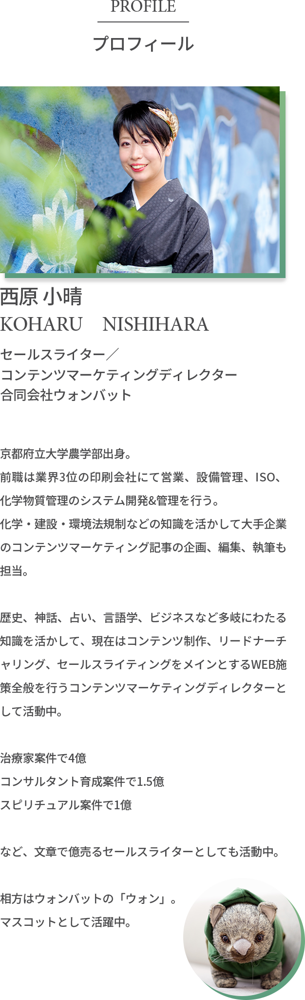


 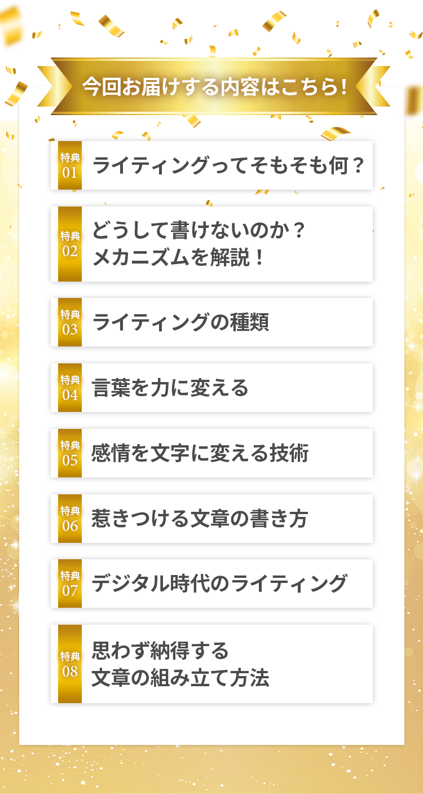
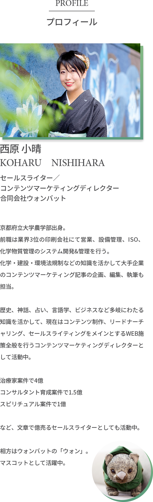
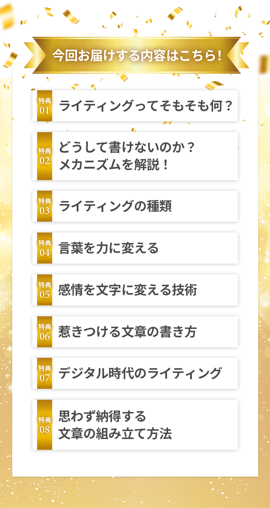
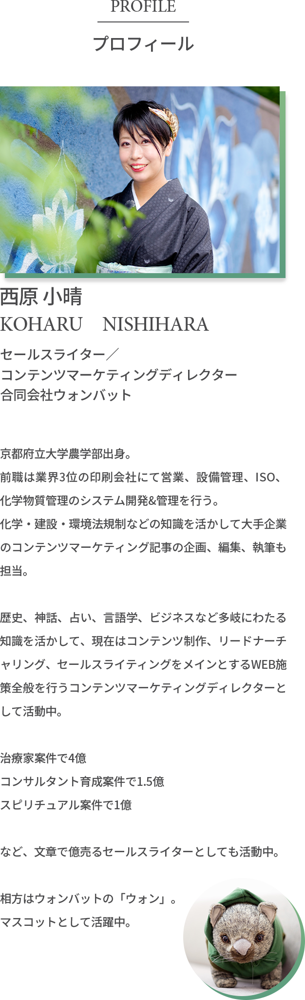
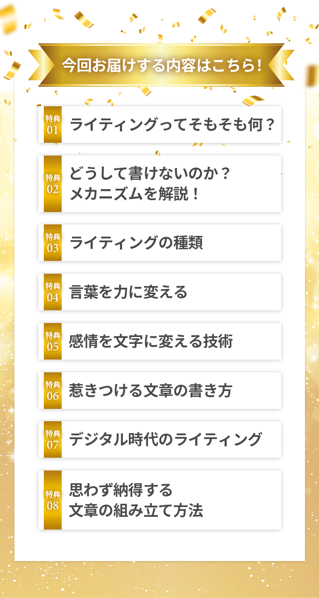
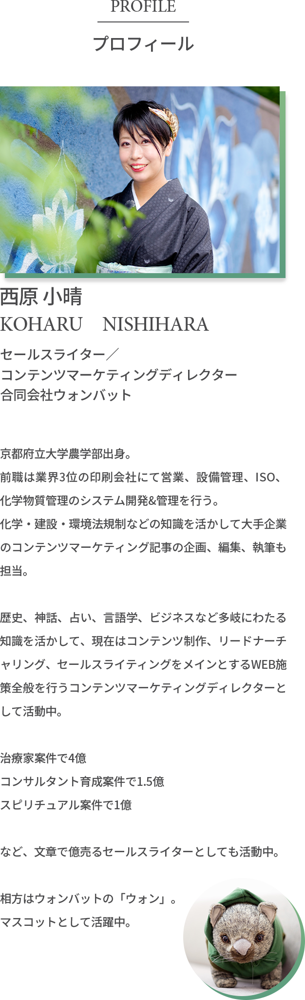
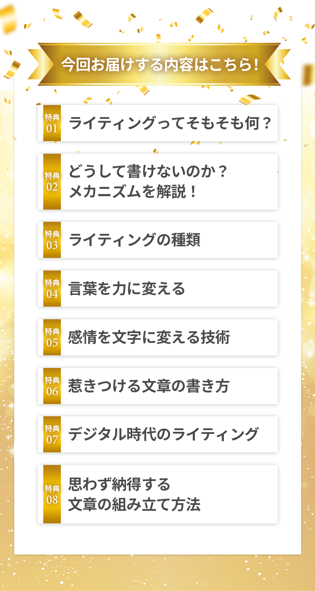
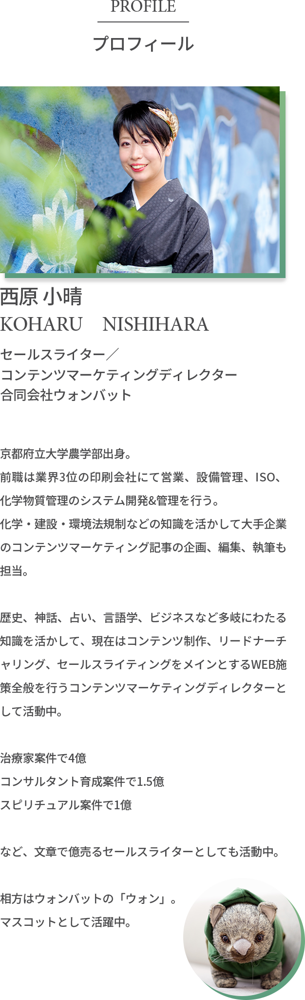
![ご挨拶 改めまして、ご興味をもっていただきありがとうございます。西原小晴です。わたしは消去法でライターになりました。2013年、初めての起業塾の合宿に100万円かけて参加して、何もないことに気づき。独立の夢を諦めきれず、2015年に同じく100万円かけてビジネス塾に参加。「ビジネス、プロモーションなどを一から教えます。」「仕事は紹介するから安心してね。」紹介はなく見事に玉砕。 プロモーションやコンテンツなどの言葉の意味もわからず、自信もなくし、塾の特典コンテンツだったライティングの音声を聞いて、「ライターだったらできるかも」でスタートしました。なんとかスタートしたものの、書くのに1ヶ月以上かかる。自信がなくて、少し書いては「これで合っていますか？」ってすぐ確認してしまう。1本2.5万〜10万円で仕事は請けていましたが、1ヶ月の稼ぎが10万円マックスだなんて、どう考えても独立は無理。そんな中、ビジネス塾で一緒だったお兄さんのご縁で、ベンチャー企業で武者修行が始まります。最初はメルマガのタイトルを考えるだけで1日かかっていて、文章はほぼ誰かのパクリ。表面上しか真似られないので本質を分かってパクれないので薄っぺらい文章。それが数ヶ月で、メルマガ、LPやセールスレターの作成など、ビジネス全般に関わるライティングができるようになりました。書けるようになった理由は、教えてくれる人がいたこと、失敗も覚悟して（こんなの書けないの恥ずかしい、とかエゴとの戦いだった）とりあえず書き続けたこと、そして時間を投資したこと。当時、京都の企業で働いていたので9〜18時で仕事をし、帰宅してからは20〜2時でライターの仕事。休みの日はほぼ1日中ライティングで、セミナーがあれば手伝いをしていました。1.行動をし続けたこと 2.書くのを諦めなかったこと 3.ちゃんと教えてくれる人がいたこと 上達の道はこれしかないな、と思っています。この無料オンライン講座で、 ライティングの上達のヒントを 得ていただければ幸いです。西原 小晴](./img/message.png) 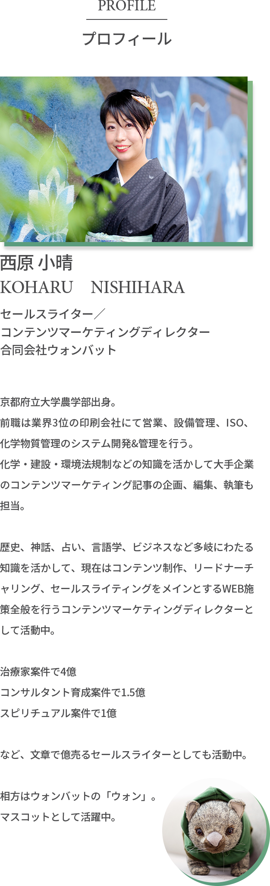
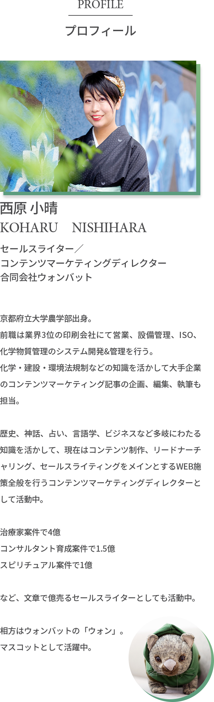